2026 National 5 Physics - Section 2 questions
Source: Scottish Qualifications Authority (SQA) / Qualifications Scotland. This is a StemInteract HTML companion, not an official HTML edition. Selectable text is supplied alongside original page images. Use the images or original PDF for equations, powers, fractions, vector notation, tables and diagrams; text extraction cannot fully preserve mathematical layout.
Jump to a question
PDF page 1
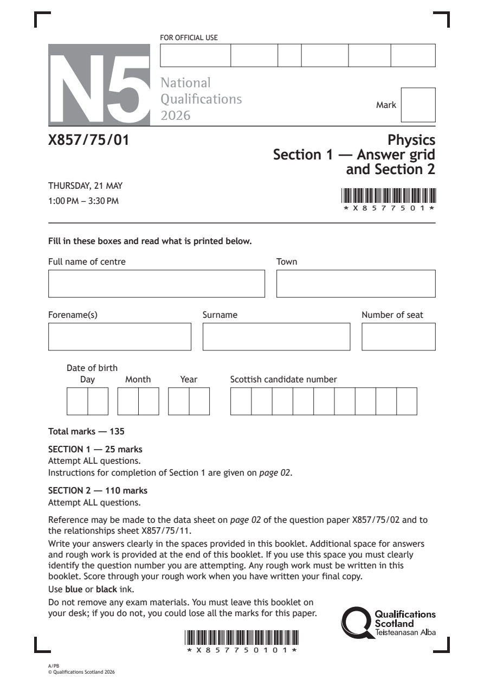
Selectable page text
FOR OFFICIAL USE
N5
National
Qualications
Mark
2026
X857/75/01 Physics
Section 1 — Answer grid
and Section 2
THURSDAY, 21 MAY
1:00 PM – 3:30 PM
*X8577501*
Fill in these boxes and read what is printed below.
Full name of centre Town
Forename(s) Surname Number of seat
Date of birth
Day Month Year Scottish candidate number
Total marks — 135
SECTION 1 — 25 marks
Attempt ALL questions.
Instructions for completion of Section 1 are given on page 02.
SECTION 2 — 110 marks
Attempt ALL questions.
Reference may be made to the data sheet on page 02 of the question paper X857/75/02 and to
the relationships sheet X857/75/11.
Write your answers clearly in the spaces provided in this booklet. Additional space for answers
and rough work is provided at the end of this booklet. If you use this space you must clearly
identify the question number you are attempting. Any rough work must be written in this
booklet. Score through your rough work when you have written your final copy.
Use blue or black ink.
Do not remove any exam materials. You must leave this booklet on
your desk; if you do not, you could lose all the marks for this paper.
*X857750101*
A/PB
© Qualifications Scotland 2026PDF page 2
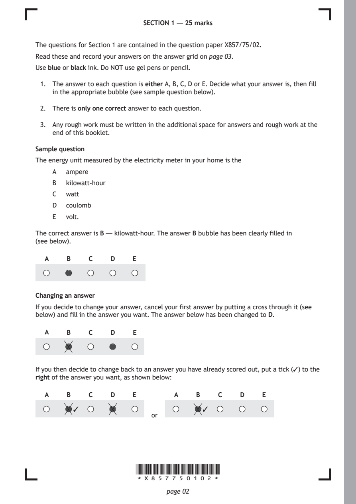
Selectable page text
SECTION 1 — 25 marks
The questions for Section 1 are contained in the question paper X857/75/02.
Read these and record your answers on the answer grid on page 03.
Use blue or black ink. Do NOT use gel pens or pencil.
1. The answer to each question is either A, B, C, D or E. Decide what your answer is, then fill
in the appropriate bubble (see sample question below).
2. There is only one correct answer to each question.
3. Any rough work must be written in the additional space for answers and rough work at the
end of this booklet.
Sample question
The energy unit measured by the electricity meter in your home is the
A ampere
B kilowatt-hour
C watt
D coulomb
E volt.
The correct answer is B — kilowatt-hour. The answer B bubble has been clearly filled in
(see below).
A B C D E
Changing an answer
If you decide to change your answer, cancel your first answer by putting a cross through it (see
below) and fill in the answer you want. The answer below has been changed to D.
A B C D E
If you then decide to change back to an answer you have already scored out, put a tick (✓) to the
right of the answer you want, as shown below:
A B C D E A B C D E
or
*X857750102*
page 02PDF page 3
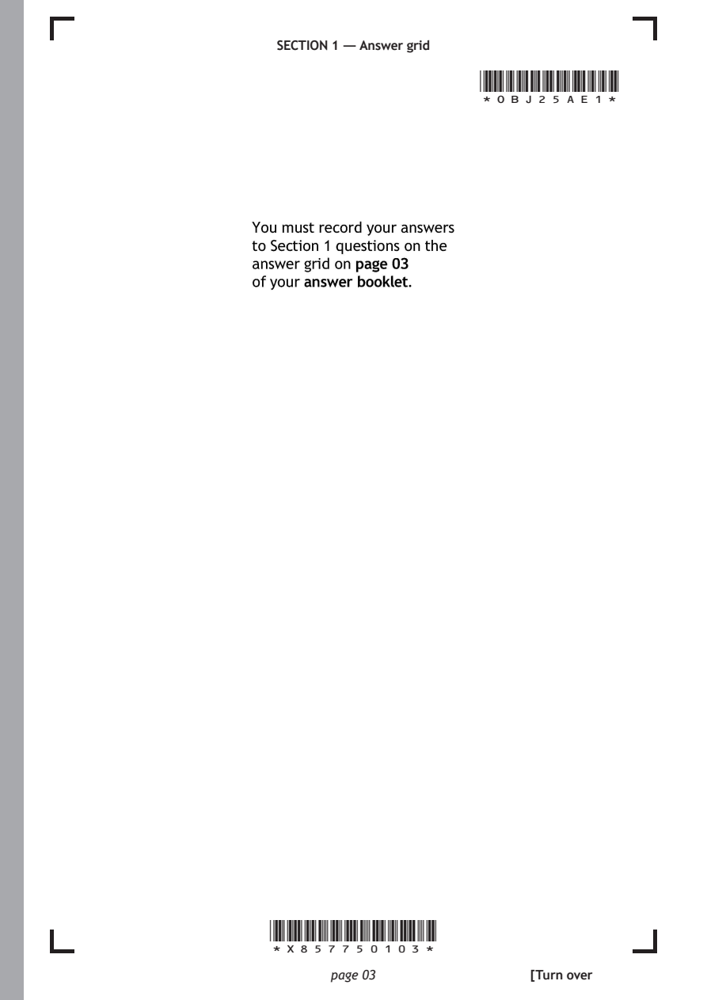
Selectable page text
SECTION 1 — Answer grid
*OBJ25AE1*
A B C D E
1
2
3
4
5
6
7
8
9
10
11
12
13
14
15
16
17
18
19
20
21
22
23
24
25
*X857750103*
page 03 [Turn overPDF page 4
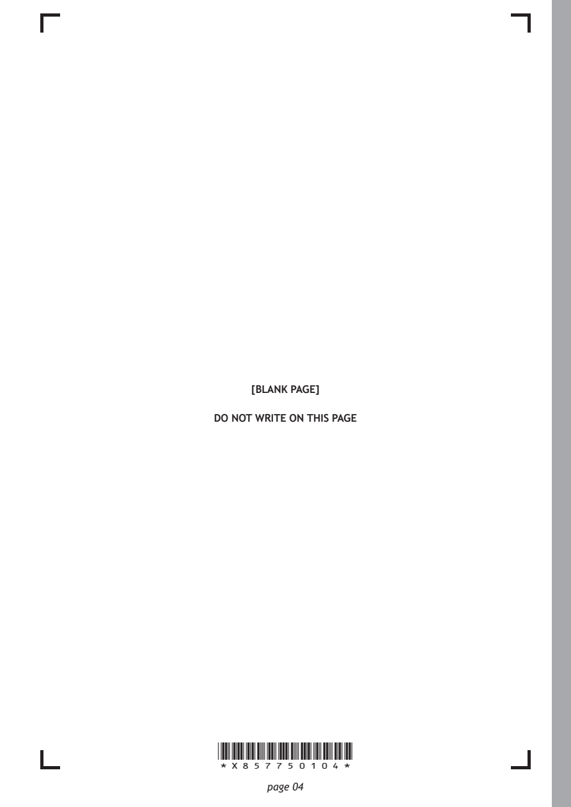
Selectable page text
[BLANK PAGE]
DO NOT WRITE ON THIS PAGE
*X857750104*
page 04PDF page 5

Selectable page text
[Turn over for SECTION 2
DO NOT WRITE ON THIS PAGE
*X857750105*
page 05PDF page 6
Section 2, Question 1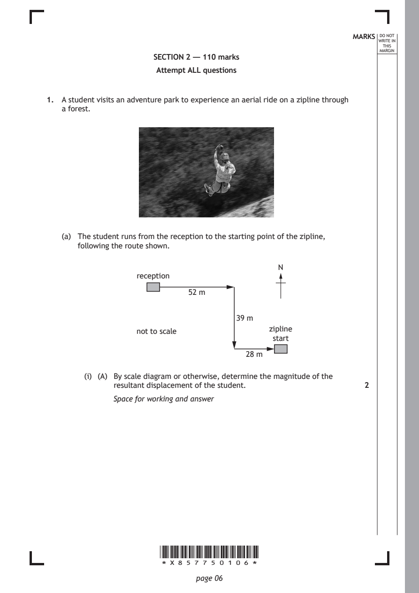
Selectable page text
MARKS _{W}^{D}_{R}^{O}_{I} _{T}^{N}OT
E IN
THIS
MARGIN
SECTION 2 — 110 marks
Attempt ALL questions
1. A student visits an adventure park to experience an aerial ride on a zipline through
a forest.
(a) The student runs from the reception to the starting point of the zipline,
following the route shown.
N
reception
52 m
39 m
zipline
not to scale
start
28 m
(i) (A) By scale diagram or otherwise, determine the magnitude of the
resultant displacement of the student. 2
Space for working and answer
*X857750106*
page 06PDF page 7
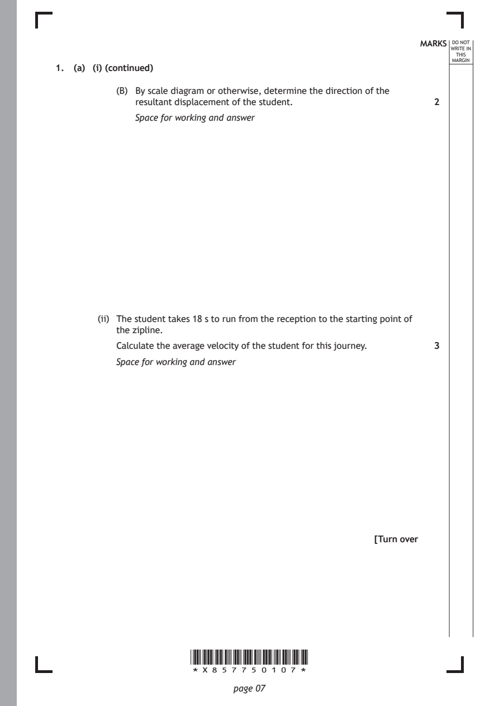
Selectable page text
MARKS _{W}^{D}_{R}^{O}_{I} _{T}^{N}OT
E IN
THIS
MARGIN
1. (a) (i) (continued)
(B) By scale diagram or otherwise, determine the direction of the
resultant displacement of the student. 2
Space for working and answer
(ii) The student takes 18 s to run from the reception to the starting point of
the zipline.
Calculate the average velocity of the student for this journey. 3
Space for working and answer
[Turn over
*X857750107*
page 07PDF page 8
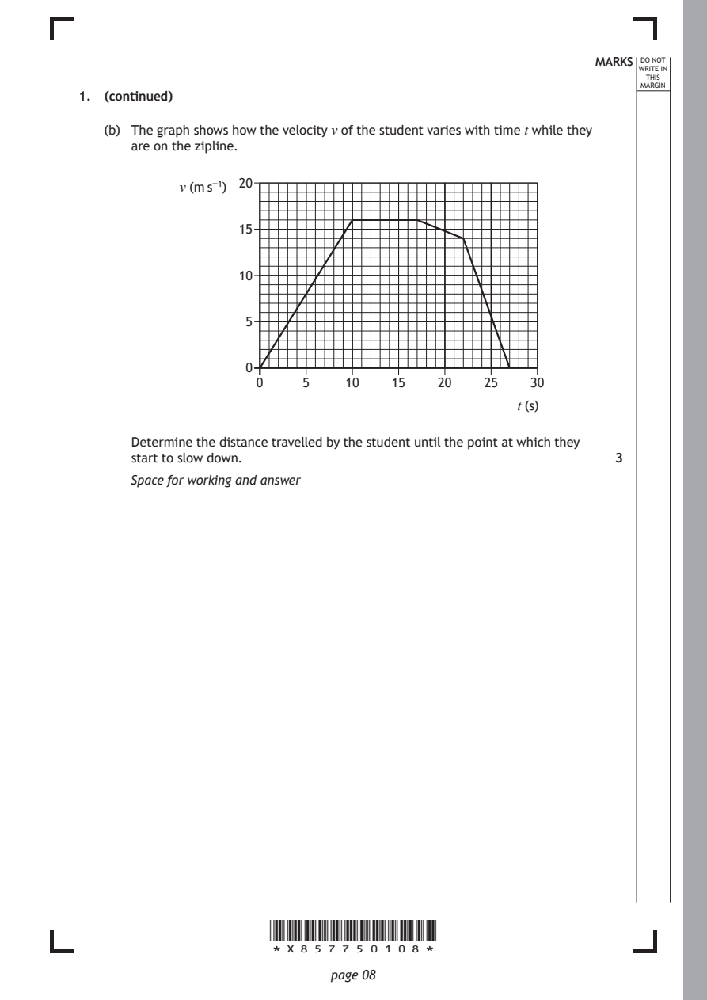
Selectable page text
MARKS _{W}^{D}_{R}^{O}_{I} _{T}^{N}OT
E IN
THIS
MARGIN
1. (continued)
(b) The graph shows how the velocity v of the student varies with time t while they
are on the zipline.
v (m s⁻¹)
20
15
10
5
0
0 5 10 15 20 25 30
t (s)
Determine the distance travelled by the student until the point at which they
start to slow down. 3
Space for working and answer
*X857750108*
page 08PDF page 9
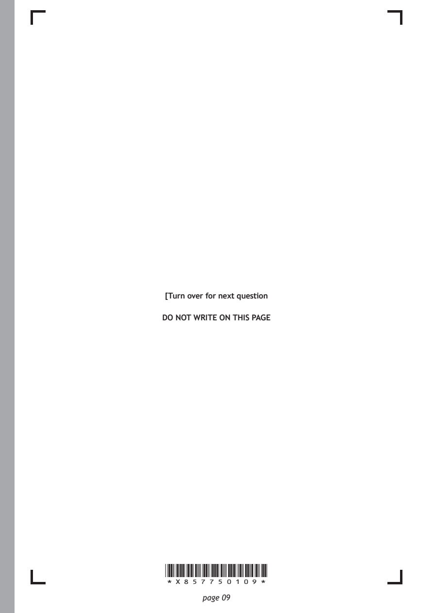
Selectable page text
[Turn over for next question
DO NOT WRITE ON THIS PAGE
*X857750109*
page 09PDF page 10
Section 2, Question 2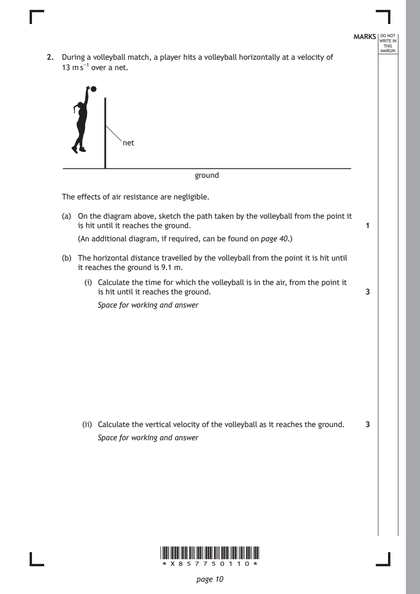
Selectable page text
MARKS _{W}^{D}_{R}^{O}_{I} _{T}^{N}OT
E IN
THIS
MARGIN
2. During a volleyball match, a player hits a volleyball horizontally at a velocity of
13 m s⁻¹ over a net.
net
ground
The effects of air resistance are negligible.
(a) On the diagram above, sketch the path taken by the volleyball from the point it
is hit until it reaches the ground. 1
(An additional diagram, if required, can be found on page 40.)
(b) The horizontal distance travelled by the volleyball from the point it is hit until
it reaches the ground is 9.1 m.
(i) Calculate the time for which the volleyball is in the air, from the point it
is hit until it reaches the ground. 3
Space for working and answer
(ii) Calculate the vertical velocity of the volleyball as it reaches the ground. 3
Space for working and answer
*X857750110*
page 10PDF page 11
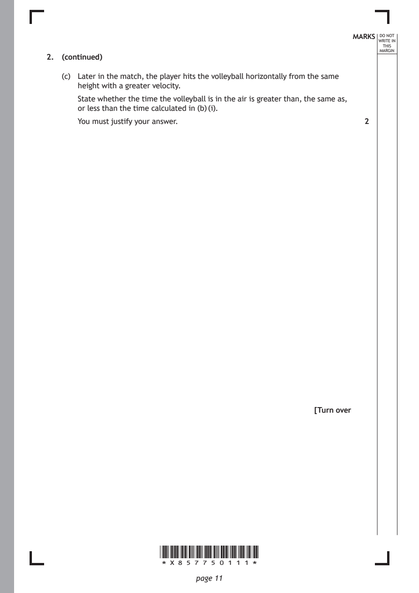
Selectable page text
MARKS _{W}^{D}_{R}^{O}_{I} _{T}^{N}OT
E IN
THIS
MARGIN
2. (continued)
(c) Later in the match, the player hits the volleyball horizontally from the same
height with a greater velocity.
State whether the time the volleyball is in the air is greater than, the same as,
or less than the time calculated in (b) (i).
You must justify your answer. 2
[Turn over
*X857750111*
page 11PDF page 12
Section 2, Question 3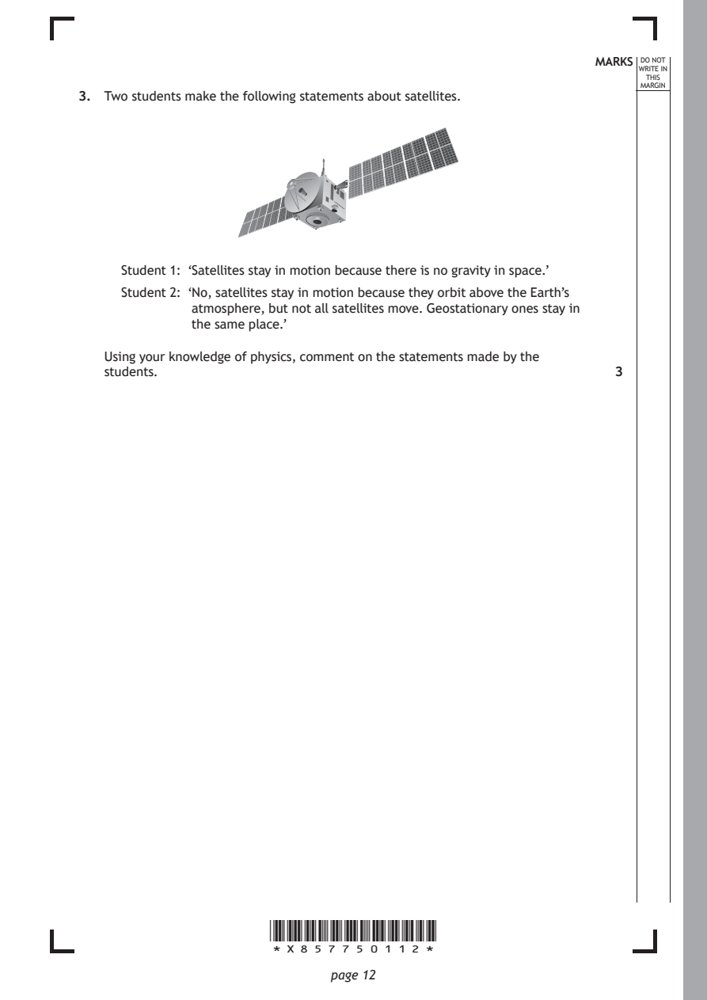
Selectable page text
MARKS _{W}^{D}_{R}^{O}_{I} _{T}^{N}OT
E IN
THIS
MARGIN
3. Two students make the following statements about satellites.
Student 1: ‘Satellites stay in motion because there is no gravity in space.’
Student 2: ‘ No, satellites stay in motion because they orbit above the Earth’s
atmosphere, but not all satellites move. Geostationary ones stay in
the same place.’
Using your knowledge of physics, comment on the statements made by the
students. 3
*X857750112*
page 12PDF page 13
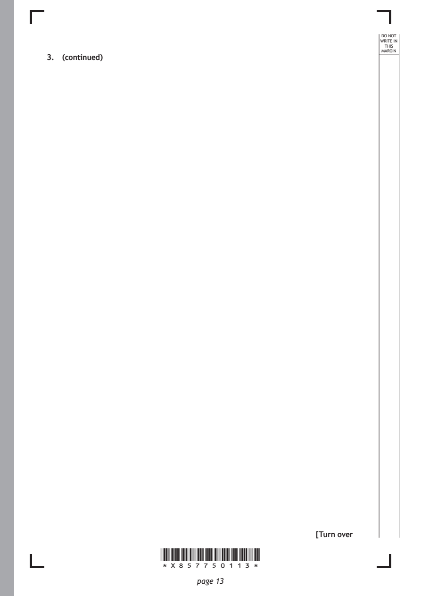
Selectable page text
DO NOT
WRITE IN
THIS
MARGIN
3. (continued)
[Turn over
*X857750113*
page 13PDF page 14
Section 2, Question 4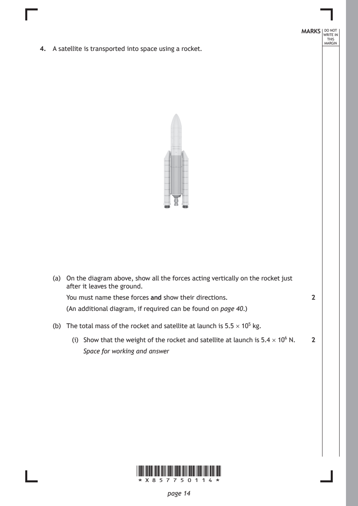
Selectable page text
MARKS _{W}^{D}_{R}^{O}_{I} _{T}^{N}OT
E IN
THIS
MARGIN
4. A satellite is transported into space using a rocket.
(a) On the diagram above, show all the forces acting vertically on the rocket just
after it leaves the ground.
You must name these forces and show their directions. 2
(An additional diagram, if required can be found on page 40.)
(b) The total mass of the rocket and satellite at launch is 5.5 × 10⁵ kg.
(i) Show that the weight of the rocket and satellite at launch is 5.4 × 10⁶ N. 2
Space for working and answer
*X857750114*
page 14PDF page 15
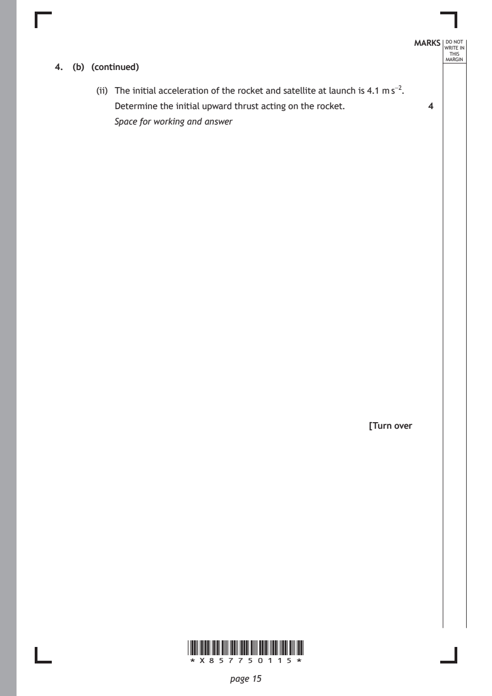
Selectable page text
MARKS _{W}^{D}_{R}^{O}_{I} _{T}^{N}OT
E IN
THIS
MARGIN
4. (b) (continued)
(ii) The initial acceleration of the rocket and satellite at launch is 4.1 m s⁻².
Determine the initial upward thrust acting on the rocket. 4
Space for working and answer
[Turn over
*X857750115*
page 15PDF page 16
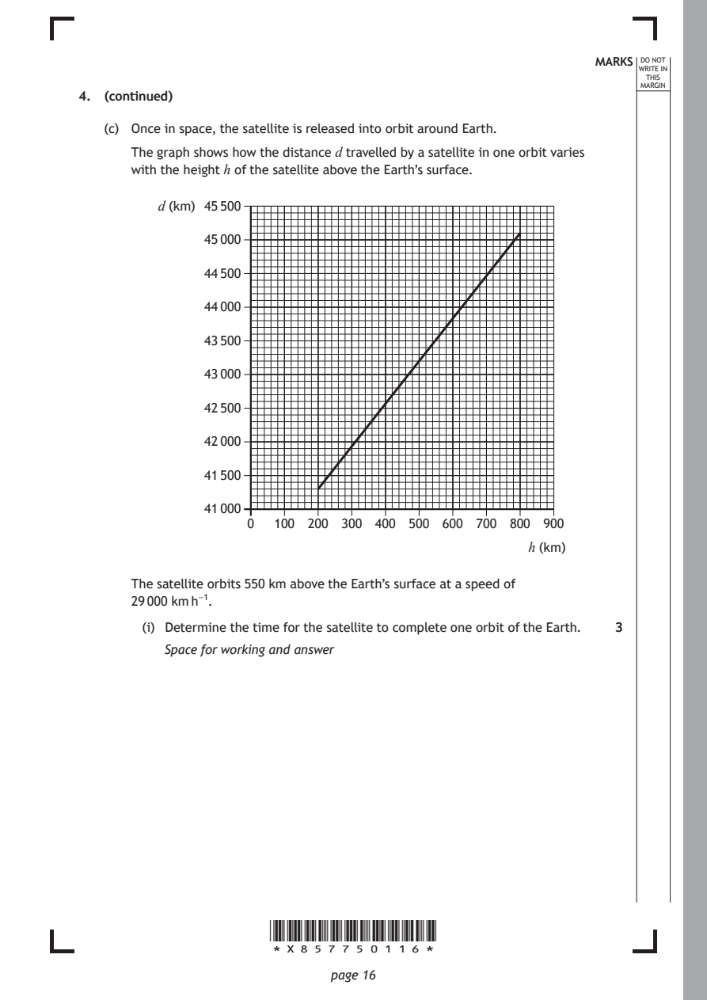
Selectable page text
MARKS _{W}^{D}_{R}^{O}_{I} _{T}^{N}OT
E IN
THIS
MARGIN
4. (continued)
(c) Once in space, the satellite is released into orbit around Earth.
The graph shows how the distance d travelled by a satellite in one orbit varies
with the height h of the satellite above the Earth’s surface.
d (km) 45 500
45 000
44 500
44 000
43 500
43 000
42 500
42 000
41 500
41 000
0 100 200 300 400 500 600 700 800 900
h (km)
The satellite orbits 550 km above the Earth’s surface at a speed of
29 000 km h⁻¹.
(i) Determine the time for the satellite to complete one orbit of the Earth. 3
Space for working and answer
*X857750116*
page 16PDF page 17
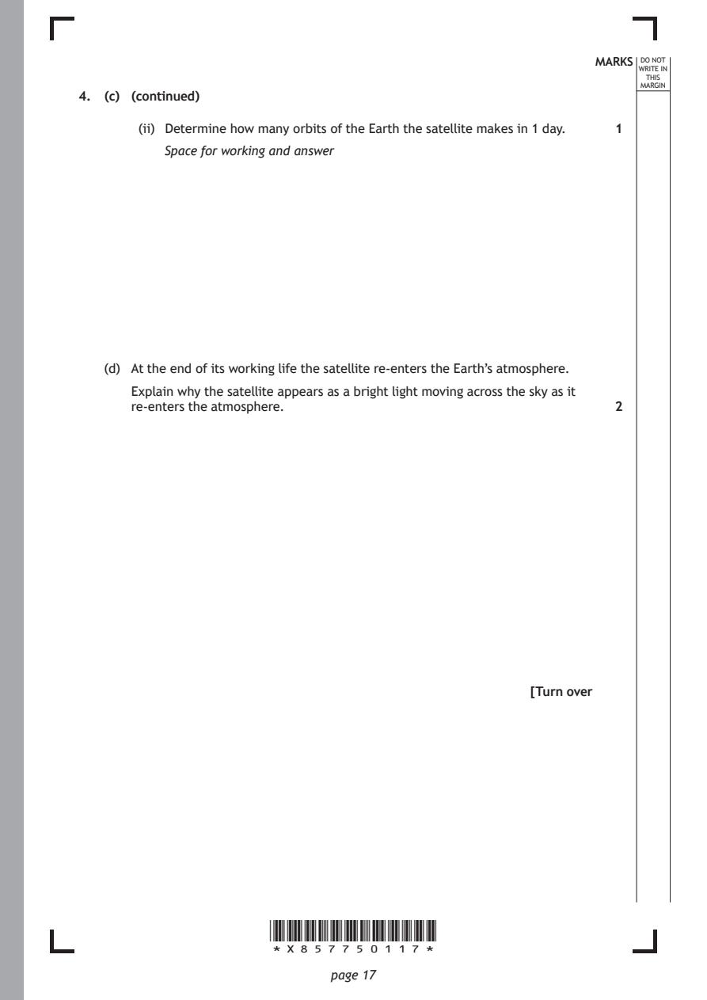
Selectable page text
MARKS _{W}^{D}_{R}^{O}_{I} _{T}^{N}OT
E IN
THIS
MARGIN
4. (c) (continued)
(ii) Determine how many orbits of the Earth the satellite makes in 1 day. 1
Space for working and answer
(d) At the end of its working life the satellite re-enters the Earth’s atmosphere.
Explain why the satellite appears as a bright light moving across the sky as it
re-enters the atmosphere. 2
[Turn over
*X857750117*
page 17PDF page 18
Section 2, Question 5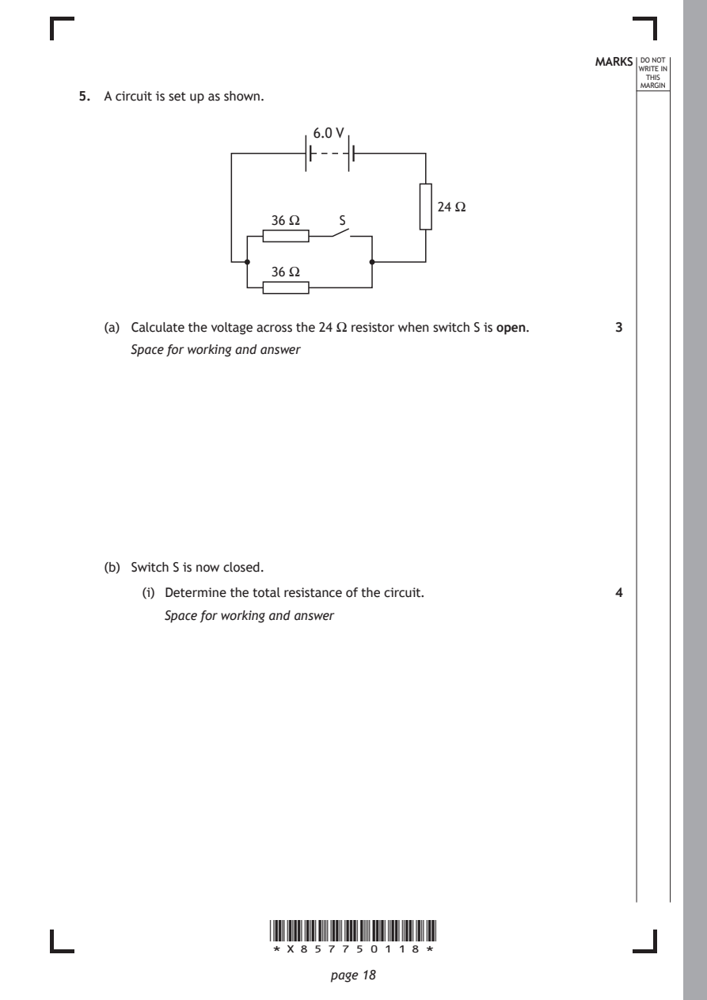
Selectable page text
MARKS _{W}^{D}_{R}^{O}_{I} _{T}^{N}OT
E IN
THIS
MARGIN
5. A circuit is set up as shown.
6.0 V
24 Ω
36 Ω S
36 Ω
(a) Calculate the voltage across the 24 Ω resistor when switch S is open. 3
Space for working and answer
(b) Switch S is now closed.
(i) Determine the total resistance of the circuit. 4
Space for working and answer
*X857750118*
page 18PDF page 19
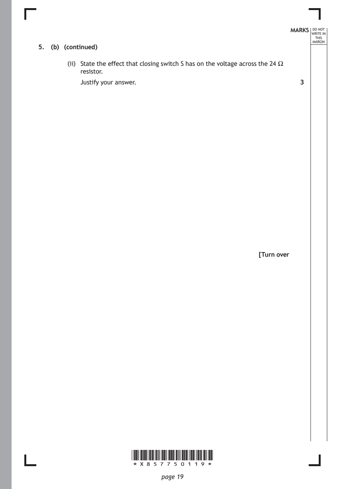
Selectable page text
MARKS _{W}^{D}_{R}^{O}_{I} _{T}^{N}OT
E IN
THIS
MARGIN
5. (b) (continued)
(ii) State the effect that closing switch S has on the voltage across the 24 Ω
resistor.
Justify your answer. 3
[Turn over
*X857750119*
page 19PDF page 20
Section 2, Question 6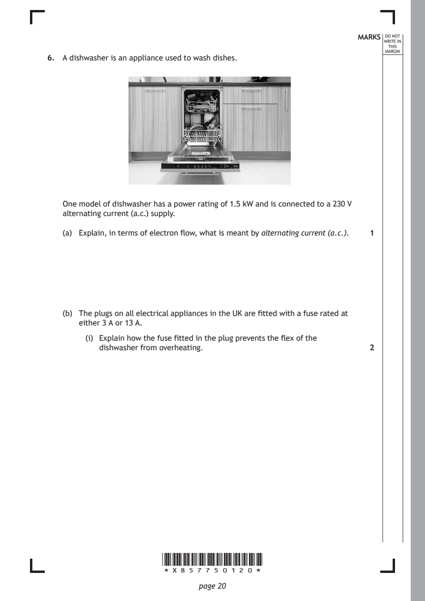
Selectable page text
MARKS _{W}^{D}_{R}^{O}_{I} _{T}^{N}OT
E IN
THIS
MARGIN
6. A dishwasher is an appliance used to wash dishes.
One model of dishwasher has a power rating of 1.5 kW and is connected to a 230 V
alternating current (a.c.) supply.
(a) Explain, in terms of electron flow, what is meant by alternating current (a.c.). 1
(b) The plugs on all electrical appliances in the UK are fitted with a fuse rated at
either 3 A or 13 A.
(i) Explain how the fuse fitted in the plug prevents the flex of the
dishwasher from overheating. 2
*X857750120*
page 20PDF page 21
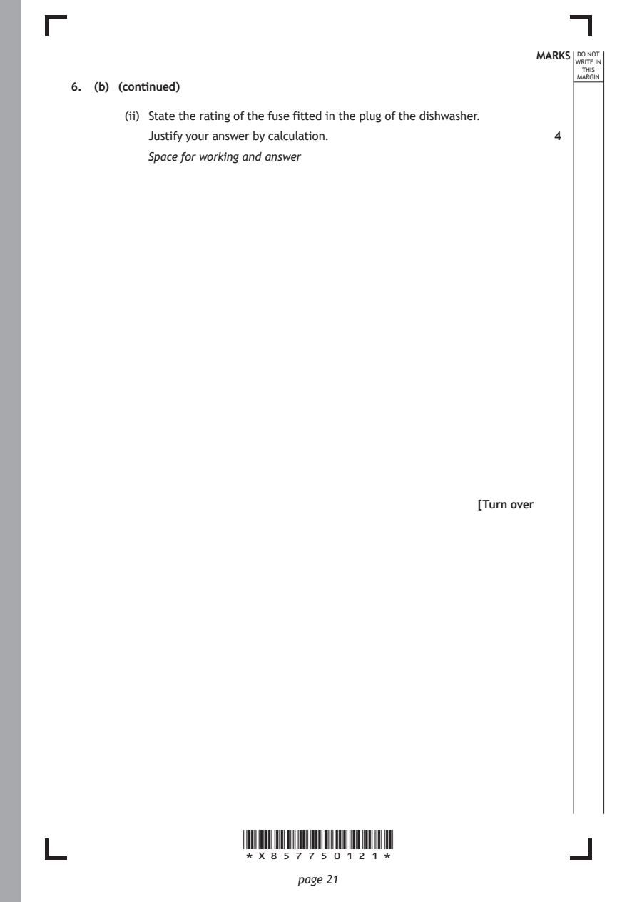
Selectable page text
MARKS _{W}^{D}_{R}^{O}_{I} _{T}^{N}OT
E IN
THIS
MARGIN
6. (b) (continued)
(ii) State the rating of the fuse fitted in the plug of the dishwasher.
Justify your answer by calculation. 4
Space for working and answer
[Turn over
*X857750121*
page 21PDF page 22
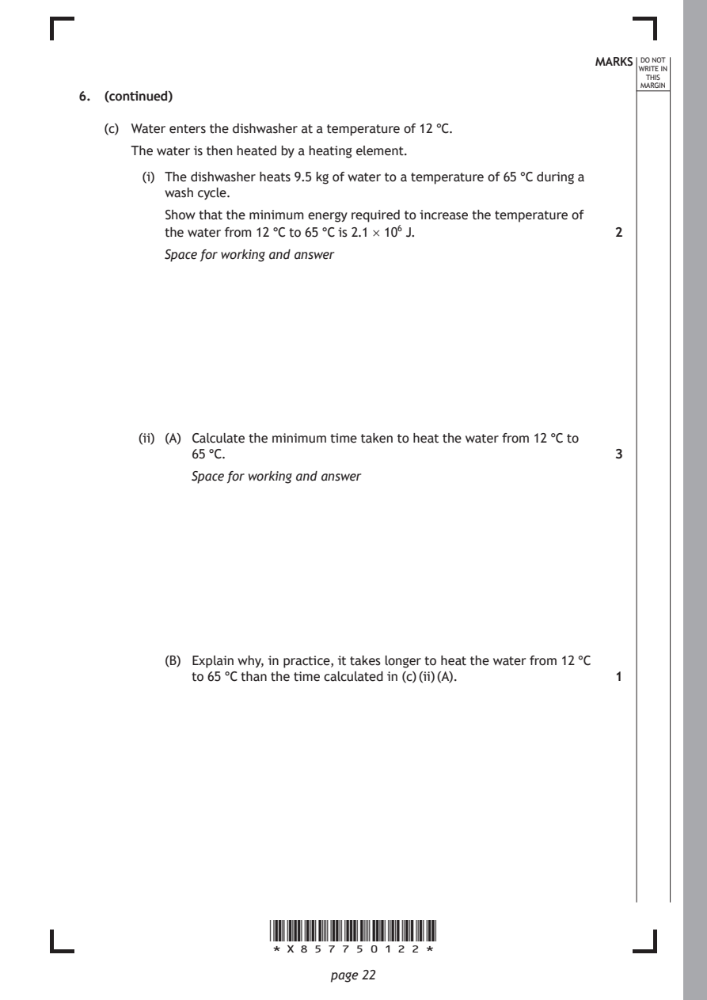
Selectable page text
MARKS _{W}^{D}_{R}^{O}_{I} _{T}^{N}OT
E IN
THIS
MARGIN
6. (continued)
(c) Water enters the dishwasher at a temperature of 12 °C.
The water is then heated by a heating element.
(i) The dishwasher heats 9.5 kg of water to a temperature of 65 °C during a
wash cycle.
Show that the minimum energy required to increase the temperature of
the water from 12 °C to 65 °C is 2.1 × 10⁶ J. 2
Space for working and answer
(ii) (A) Calculate the minimum time taken to heat the water from 12 °C to
65 °C. 3
Space for working and answer
(B) Explain why, in practice, it takes longer to heat the water from 12 °C
to 65 °C than the time calculated in (c) (ii) (A). 1
*X857750122*
page 22PDF page 23
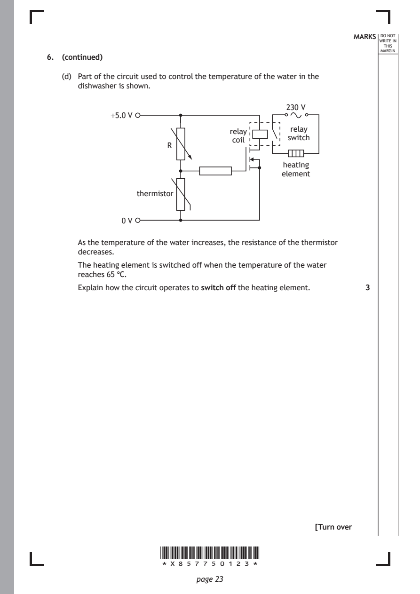
Selectable page text
MARKS _{W}^{D}_{R}^{O}_{I} _{T}^{N}OT
E IN
THIS
MARGIN
6. (continued)
(d) Part of the circuit used to control the temperature of the water in the
dishwasher is shown.
230 V
+5.0 V
relay
relay
switch
coil
R
heating
element
thermistor
0 V
As the temperature of the water increases, the resistance of the thermistor
decreases.
The heating element is switched off when the temperature of the water
reaches 65 °C.
Explain how the circuit operates to switch off the heating element. 3
[Turn over
*X857750123*
page 23PDF page 24
Section 2, Question 7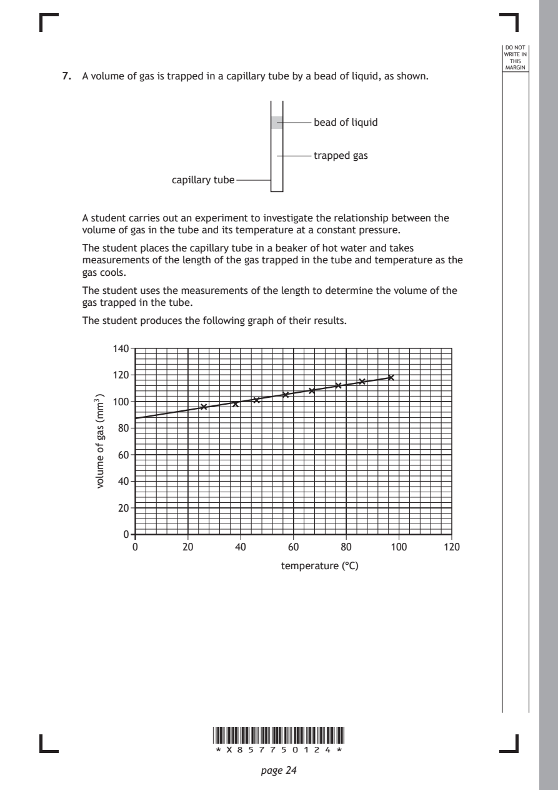
Selectable page text
DO NOT
WRITE IN
THIS
MARGIN
7. A volume of gas is trapped in a capillary tube by a bead of liquid, as shown.
bead of liquid
trapped gas
capillary tube
A student carries out an experiment to investigate the relationship between the
volume of gas in the tube and its temperature at a constant pressure.
The student places the capillary tube in a beaker of hot water and takes
measurements of the length of the gas trapped in the tube and temperature as the
gas cools.
The student uses the measurements of the length to determine the volume of the
gas trapped in the tube.
The student produces the following graph of their results.
140
120
100
80
60
40
20
0
0 20 40 60
temperature (°C)
*X857750124*
page 24
)
3mm(
sag
fo
emulov
80 100 120PDF page 25
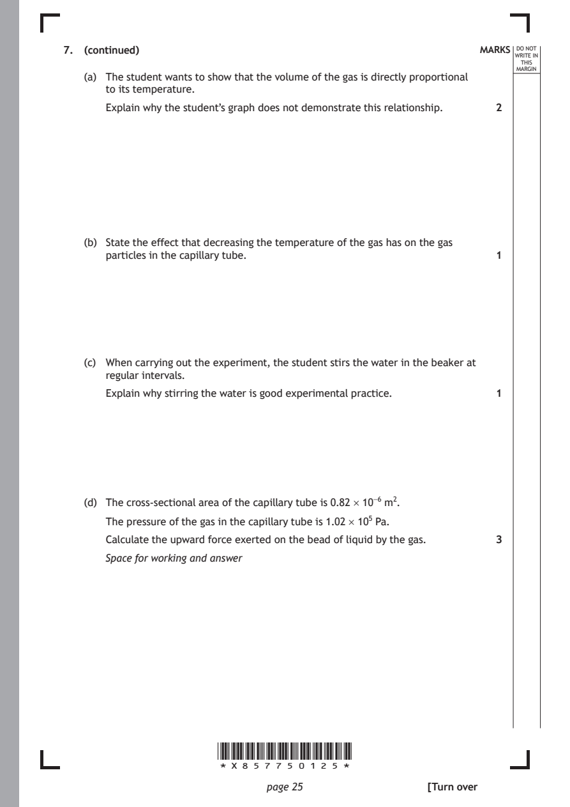
Selectable page text
7. (continued) MARKS _{W}^{D}_{R}^{O}_{I} _{T}^{N}OT
E IN
THIS
MARGIN
(a) The student wants to show that the volume of the gas is directly proportional
to its temperature.
Explain why the student’s graph does not demonstrate this relationship. 2
(b) State the effect that decreasing the temperature of the gas has on the gas
particles in the capillary tube. 1
(c) When carrying out the experiment, the student stirs the water in the beaker at
regular intervals.
Explain why stirring the water is good experimental practice. 1
(d) The cross-sectional area of the capillary tube is 0.82 × 10⁻⁶ m².
The pressure of the gas in the capillary tube is 1.02 × 10⁵ Pa.
Calculate the upward force exerted on the bead of liquid by the gas. 3
Space for working and answer
*X857750125*
page 25 [Turn overPDF page 26
Section 2, Question 8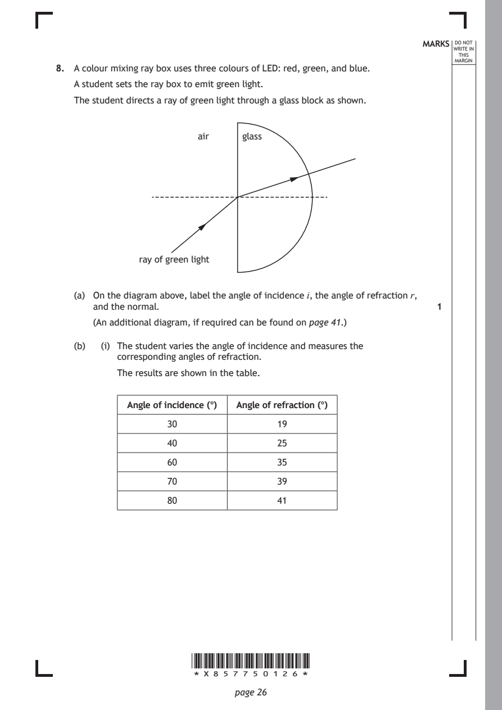
Selectable page text
MARKS _{W}^{D}_{R}^{O}_{I} _{T}^{N}OT
E IN
THIS
MARGIN
8. A colour mixing ray box uses three colours of LED: red, green, and blue.
A student sets the ray box to emit green light.
The student directs a ray of green light through a glass block as shown.
air glass
ray of green light
(a) On the diagram above, label the angle of incidence i, the angle of refraction r,
and the normal. 1
(An additional diagram, if required can be found on page 41.)
(b) (i) The student varies the angle of incidence and measures the
corresponding angles of refraction.
The results are shown in the table.
Angle of incidence (°) Angle of refraction (°)
30 19
40 25
60 35
70 39
80 41
*X857750126*
page 26PDF page 27
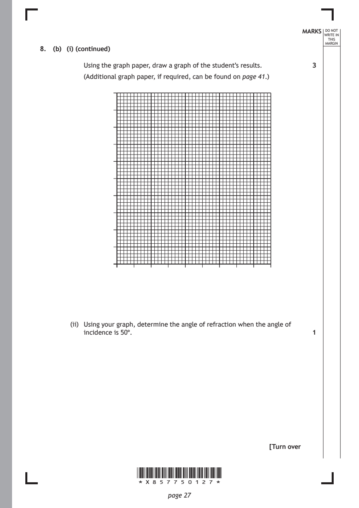
Selectable page text
MARKS _{W}^{D}_{R}^{O}_{I} _{T}^{N}OT
E IN
THIS
MARGIN
8. (b) (i) (continued)
Using the graph paper, draw a graph of the student’s results. 3
(Additional graph paper, if required, can be found on page 41.)
(ii) Using your graph, determine the angle of refraction when the angle of
incidence is 50°. 1
[Turn over
*X857750127*
page 27PDF page 28
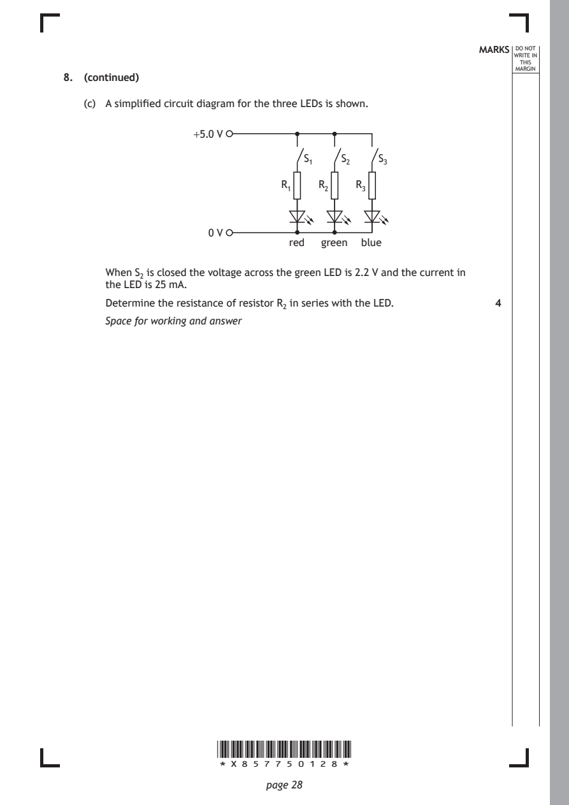
Selectable page text
MARKS _{W}^{D}_{R}^{O}_{I} _{T}^{N}OT
E IN
THIS
MARGIN
8. (continued)
(c) A simplified circuit diagram for the three LEDs is shown.
+5.0 V
S₁ S₂ S₃
R₁ R₂ R₃
0 V
red green blue
When S₂ is closed the voltage across the green LED is 2.2 V and the current in
the LED is 25 mA.
Determine the resistance of resistor R₂ in series with the LED. 4
Space for working and answer
*X857750128*
page 28PDF page 29
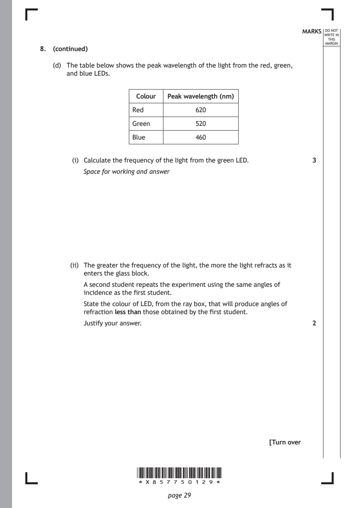
Selectable page text
MARKS _{W}^{D}_{R}^{O}_{I} _{T}^{N}OT
E IN
THIS
MARGIN
8. (continued)
(d) The table below shows the peak wavelength of the light from the red, green,
and blue LEDs.
Colour Peak wavelength (nm)
Red 620
Green 520
Blue 460
(i) Calculate the frequency of the light from the green LED. 3
Space for working and answer
(ii) The greater the frequency of the light, the more the light refracts as it
enters the glass block.
A second student repeats the experiment using the same angles of
incidence as the first student.
State the colour of LED, from the ray box, that will produce angles of
refraction less than those obtained by the first student.
Justify your answer. 2
[Turn over
*X857750129*
page 29PDF page 30
Section 2, Question 9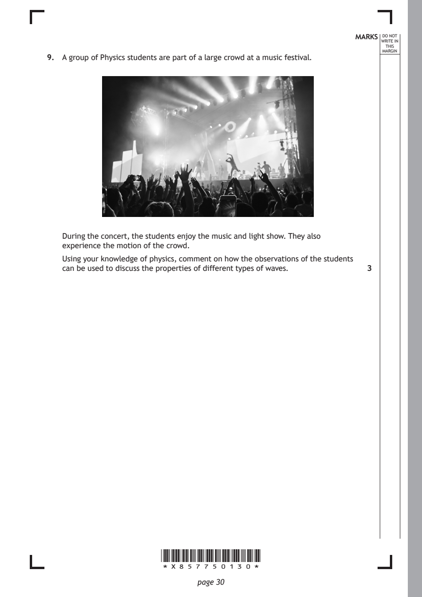
Selectable page text
MARKS _{W}^{D}_{R}^{O}_{I} _{T}^{N}OT
E IN
THIS
MARGIN
9. A group of Physics students are part of a large crowd at a music festival.
During the concert, the students enjoy the music and light show. They also
experience the motion of the crowd.
Using your knowledge of physics, comment on how the observations of the students
can be used to discuss the properties of different types of waves. 3
*X857750130*
page 30PDF page 31
Selectable page text
DO NOT
WRITE IN
THIS
MARGIN
9. (continued)
[Turn over
*X857750131*
page 31PDF page 32
Section 2, Question 10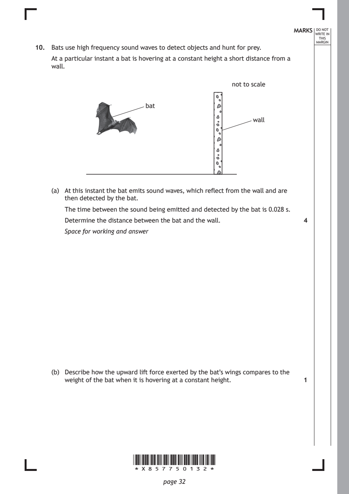
Selectable page text
MARKS _{W}^{D}_{R}^{O}_{I} _{T}^{N}OT
E IN
THIS
MARGIN
10. Bats use high frequency sound waves to detect objects and hunt for prey.
At a particular instant a bat is hovering at a constant height a short distance from a
wall.
not to scale
bat
wall
(a) At this instant the bat emits sound waves, which reflect from the wall and are
then detected by the bat.
The time between the sound being emitted and detected by the bat is 0.028 s.
Determine the distance between the bat and the wall. 4
Space for working and answer
(b) Describe how the upward lift force exerted by the bat’s wings compares to the
weight of the bat when it is hovering at a constant height. 1
*X857750132*
page 32PDF page 33
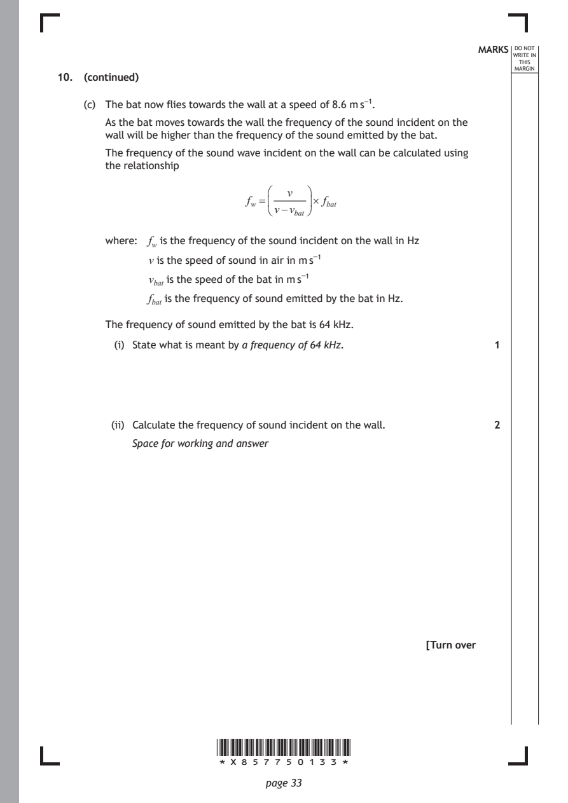
Selectable page text
MARKS _{W}^{D}_{R}^{O}_{I} _{T}^{N}OT
E IN
THIS
MARGIN
10. (continued)
(c) The bat now flies towards the wall at a speed of 8.6 m s⁻¹.
As the bat moves towards the wall the frequency of the sound incident on the
wall will be higher than the frequency of the sound emitted by the bat.
The frequency of the sound wave incident on the wall can be calculated using
the relationship
v
f_{w} = × f_{b}ₐₜ
v−v_{b}ₐₜ
where: f_{w} is the frequency of the sound incident on the wall in Hz
v is the speed of sound in air in m s⁻¹
v_{b}ₐₜ is the speed of the bat in m s⁻¹
f_{b}ₐₜ is the frequency of sound emitted by the bat in Hz.
The frequency of sound emitted by the bat is 64 kHz.
(i) State what is meant by a frequency of 64 kHz. 1
(ii) Calculate the frequency of sound incident on the wall. 2
Space for working and answer
[Turn over
*X857750133*
page 33PDF page 34
Section 2, Question 11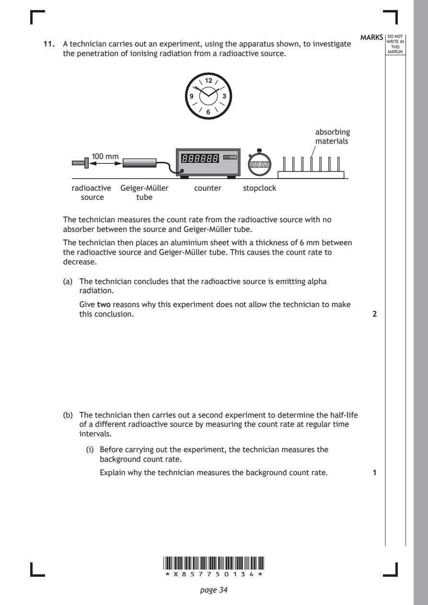
Selectable page text
MARKS _{W}^{D}_{R}^{O}_{I} _{T}^{N}OT
11. A technician carries out an experiment, using the apparatus shown, to investigate E IN
THIS
the penetration of ionising radiation from a radioactive source. MARGIN
absorbing
materials
100 mm
radioactive Geiger-Müller counter stopclock
source tube
The technician measures the count rate from the radioactive source with no
absorber between the source and Geiger-Müller tube.
The technician then places an aluminium sheet with a thickness of 6 mm between
the radioactive source and Geiger-Müller tube. This causes the count rate to
decrease.
(a) The technician concludes that the radioactive source is emitting alpha
radiation.
Give two reasons why this experiment does not allow the technician to make
this conclusion. 2
(b) The technician then carries out a second experiment to determine the half-life
of a different radioactive source by measuring the count rate at regular time
intervals.
(i) Before carrying out the experiment, the technician measures the
background count rate.
Explain why the technician measures the background count rate. 1
*X857750134*
page 34PDF page 35
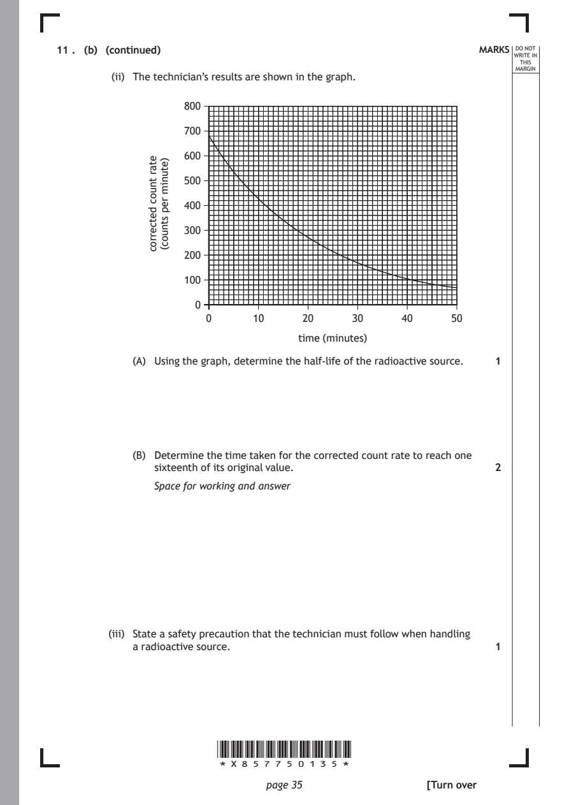
Selectable page text
11 . (b) (continued) MARKS _{W}^{D}_{R}^{O}_{I} _{T}^{N}OT
E IN
THIS
MARGIN
(ii) The technician’s results are shown in the graph.
800
700
600
500
400
300
200
100
0
*X857750135*
page 35
etar
tnuoc
detcerroc
)etunim
rep
stnuoc(
0 10 20 30 40 50
time (minutes)
(A) Using the graph, determine the half-life of the radioactive source. 1
(B) Determine the time taken for the corrected count rate to reach one
sixteenth of its original value. 2
Space for working and answer
(iii) State a safety precaution that the technician must follow when handling
a radioactive source. 1
[Turn overPDF page 36
Section 2, Question 12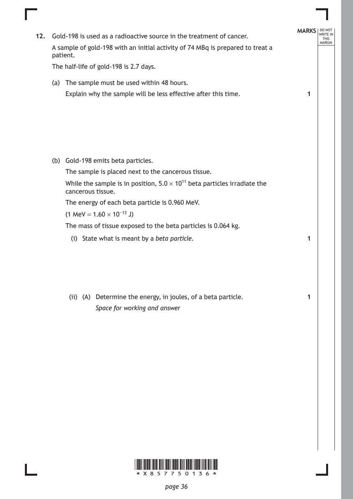
Selectable page text
MARKS _{W}^{D}_{R}^{O}_{I} _{T}^{N}OT
12. Gold-198 is used as a radioactive source in the treatment of cancer. E IN
THIS
MARGIN
A sample of gold-198 with an initial activity of 74 MBq is prepared to treat a
patient.
The half-life of gold-198 is 2.7 days.
(a) The sample must be used within 48 hours.
Explain why the sample will be less effective after this time. 1
(b) Gold-198 emits beta particles.
The sample is placed next to the cancerous tissue.
While the sample is in position, 5.0 × 10¹¹ beta particles irradiate the
cancerous tissue.
The energy of each beta particle is 0.960 MeV.
(1 MeV = 1.60 × 10⁻¹³ J)
The mass of tissue exposed to the beta particles is 0.064 kg.
(i) State what is meant by a beta particle. 1
(ii) (A) Determine the energy, in joules, of a beta particle. 1
Space for working and answer
*X857750136*
page 36PDF page 37
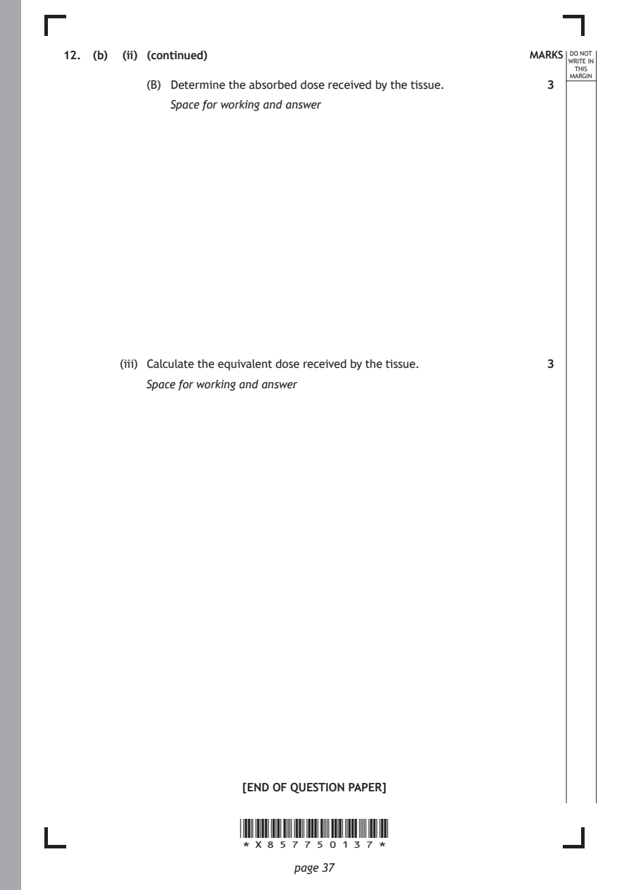
Selectable page text
12. (b) (ii) (continued) MARKS _{W}^{D}_{R}^{O}_{I} _{T}^{N}OT
E IN
THIS
ARGIN
(B) Determine the absorbed dose received by the tissue. 3 ^{M}
Space for working and answer
(iii) Calculate the equivalent dose received by the tissue. 3
Space for working and answer
[END OF QUESTION PAPER]
*X857750137*
page 37PDF page 38
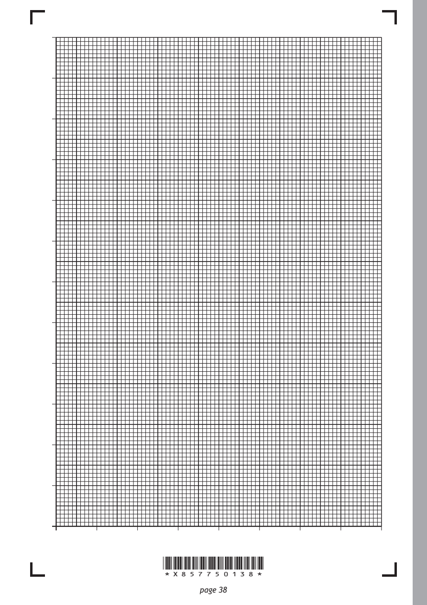
Selectable page text
*X857750138*
page 38PDF page 39
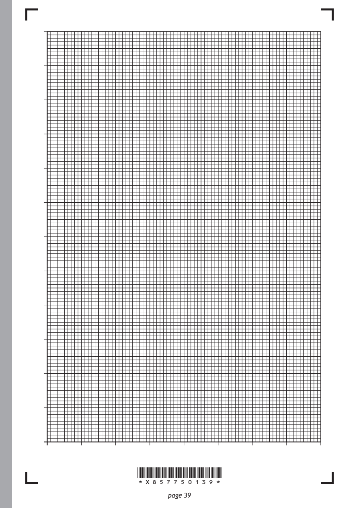
Selectable page text
*X857750139*
page 39PDF page 40
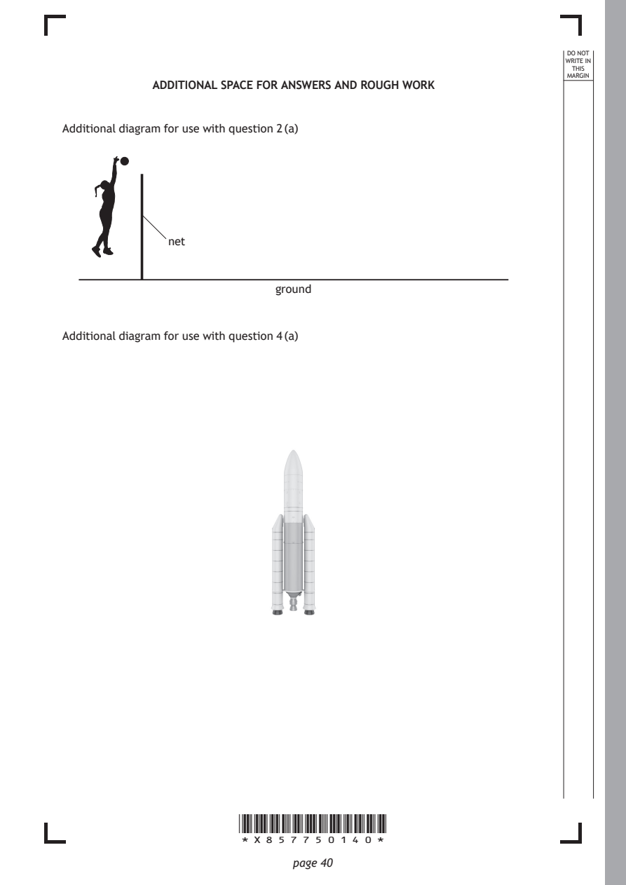
Selectable page text
DO NOT
WRITE IN
THIS
MARGIN
ADDITIONAL SPACE FOR ANSWERS AND ROUGH WORK
Additional diagram for use with question 2 (a)
net
ground
Additional diagram for use with question 4 (a)
*X857750140*
page 40PDF page 41
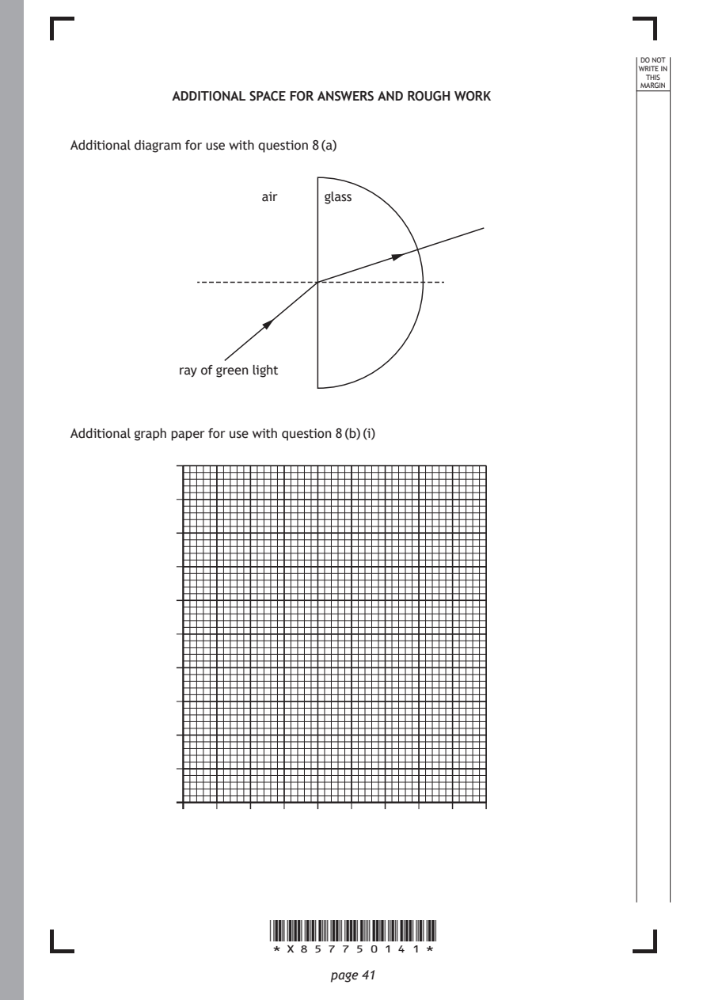
Selectable page text
DO NOT
WRITE IN
THIS
MARGIN
ADDITIONAL SPACE FOR ANSWERS AND ROUGH WORK
Additional diagram for use with question 8 (a)
air glass
ray of green light
Additional graph paper for use with question 8 (b) (i)
*X857750141*
page 41PDF page 42
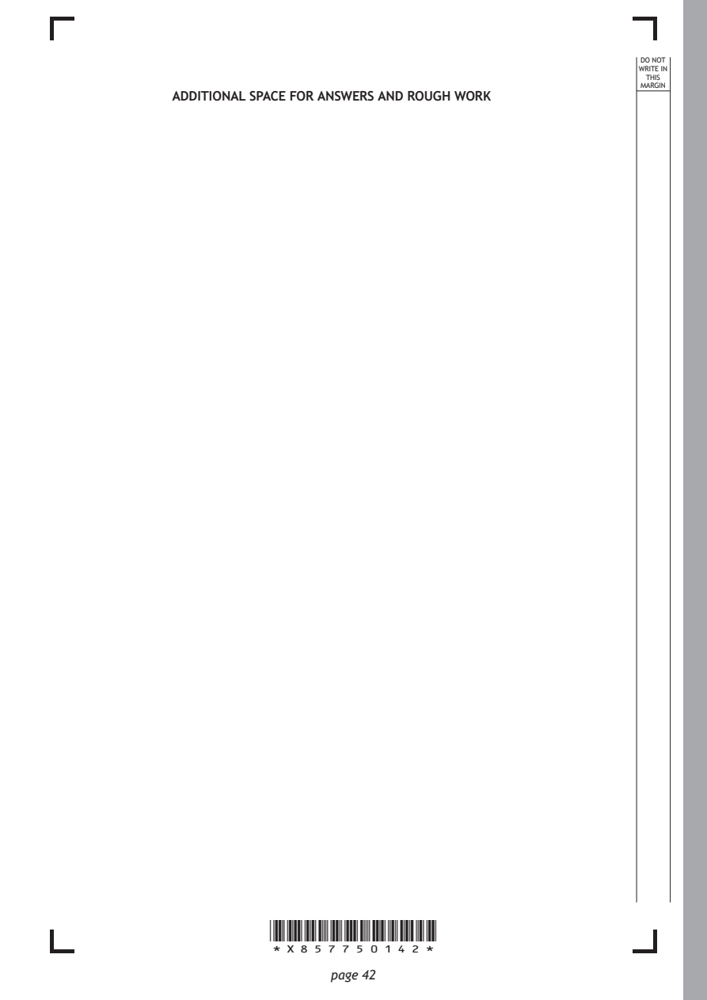
Selectable page text
DO NOT
WRITE IN
THIS
MARGIN
ADDITIONAL SPACE FOR ANSWERS AND ROUGH WORK
*X857750142*
page 42PDF page 43
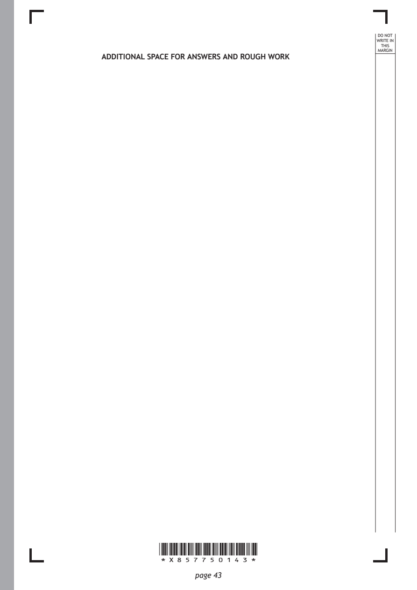
Selectable page text
DO NOT
WRITE IN
THIS
MARGIN
ADDITIONAL SPACE FOR ANSWERS AND ROUGH WORK
*X857750143*
page 43PDF page 44
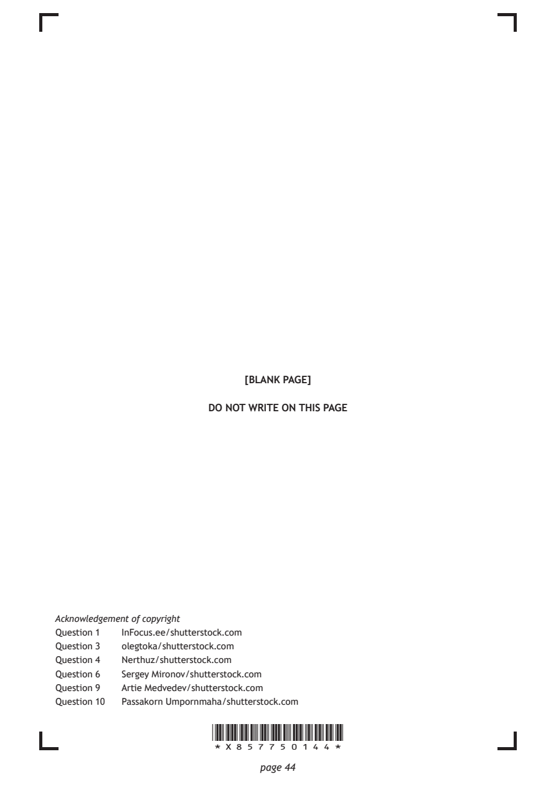
Selectable page text
[BLANK PAGE]
DO NOT WRITE ON THIS PAGE
Acknowledgement of copyright
Question 1 InFocus.ee/shutterstock.com
Question 3 olegtoka/shutterstock.com
Question 4 Nerthuz/shutterstock.com
Question 6 Sergey Mironov/shutterstock.com
Question 9 Artie Medvedev/shutterstock.com
Question 10 Passakorn Umpornmaha/shutterstock.com
*X857750144*
page 44